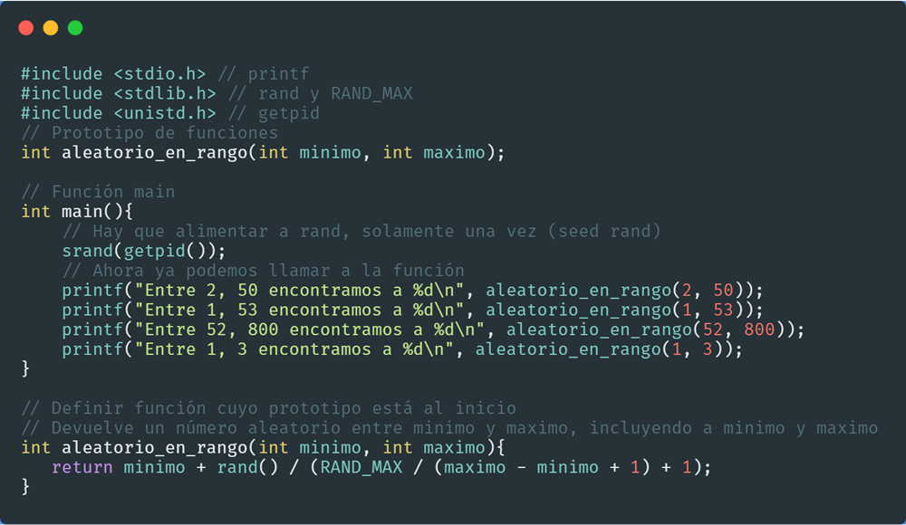

Múltiples ejemplos para poner marcas de agua con PHP usando funciones de la librería GD
Autor:
Parzibyte
Arriba al centro
Arriba a la derecha
Arriba a la izquierda
Centrada horizontal y verticalmente
Centrada con opacidad
Marca de agua en dos posiciones
Poner marca de agua y guardar en disco duro
Imagen original

Marca de agua